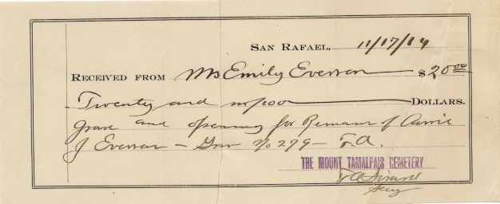

L'ENVOI
And in time, as to all of us, death came to Carrie Jane Billings Everson. I was only six years old, and was not taken to the ceremony - if there was one.
Recently, however (1992), in the process of compiling this narrative and rummaging through whatever clippings, notes, etc. remained, I came across the Cemetery receipt shown below. So she is (or at least, was) buried in the Mount Tamalpais Cemetery near San Rafael, in Grave No. 279, on November 17, 1914--a week after her death.
I have never gone to see her grave. Perhaps before I reach the end of the trail I shall make a belated pilgrimage to pay my last respects to, by all accounts, a gentle and talented lady who contributed considerably more to society than I have or ever will. R. I. P.
